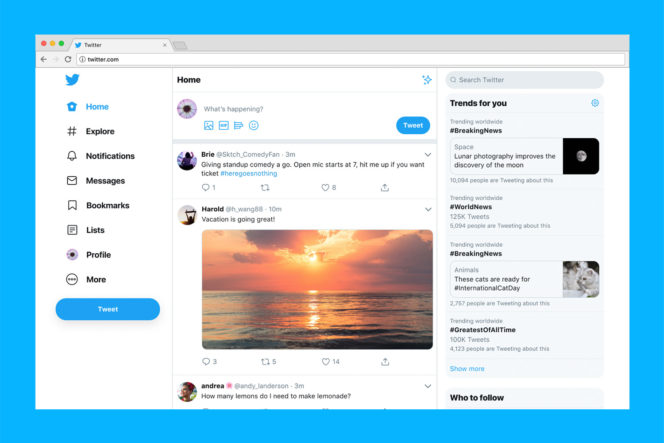
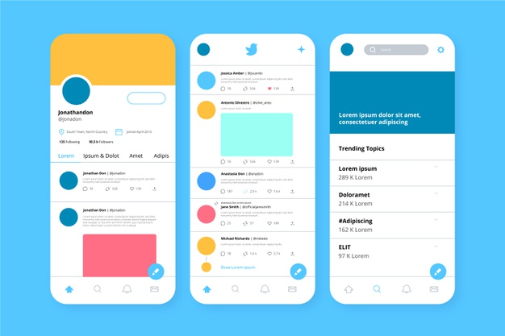

Twitter permet à un utilisateur d’envoyer gratuitement des micromessages, appelés tweets, sur internet, ou par messagerie instantanée. Ces messages sont limités à 280 caractères.

Twitter a été créé le 21 mars 2006 par Jack Dorsey, Evan Williams, Biz Stone et Noah Glass. Le service en ligne est rapidement devenu populaire. Le 5 mars 2017, il compte 313 millions d’utilisateurs actifs par mois, 500 millions de tweets envoyés par jour et est disponible en plus de quarante langues. s'inscrire sur Twitter
Voici à quoi ressemble l'interface de twitter:
 